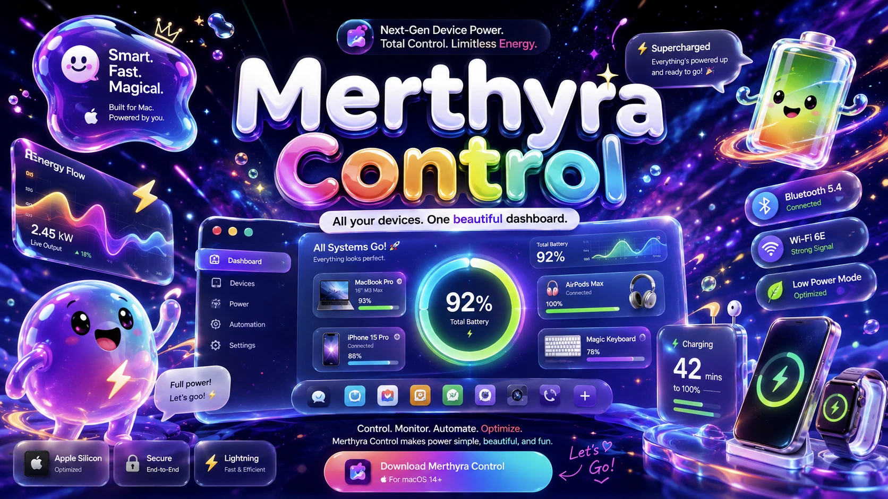

Your real setup
See every device that matters.
Your Mac battery, keyboards, mice, headphones, phones, controllers, and supported plugged-in gear appear in one clean command center—with connection state and last-seen details.
Merthyra Control turns your Mac, Bluetooth gear, batteries, charging states, and device health into one colorful dashboard that is useful at a glance—and actually has a personality.

One dashboard. Zero mystery batteries.
Merthyra Control is designed to show the hardware you actually care about—not a giant wall of random Bluetooth IDs, vague charging symbols, or buried settings.
Your real setup
Your Mac battery, keyboards, mice, headphones, phones, controllers, and supported plugged-in gear appear in one clean command center—with connection state and last-seen details.
Battery intelligence
See charging state, estimated time remaining, recent battery behavior, and plain-language warnings before a device becomes tomorrow-you’s problem.
No Bluetooth soup
Merthyra Control is being built to prioritize recognizable hardware and suppress meaningless nearby-device clutter, so “25 detected devices” becomes an actual useful answer.
Alerts with a pulse
Choose calm professional alerts or let Merthyra Control add some personality when a battery gets low, a device reconnects, or everything is finally powered up.
Fast controls
Jump into device details, refresh connection data, tune alerts, view battery history, and surface supported controls without spelunking through five different preference panes.
Mac vibe coded from the start
Merthyra Control is designed to feel at home on macOS while still being unmistakably Merthyra: bold gradients, liquid glass, bouncy motion, expressive status messages, and useful information that never gets lost inside the spectacle.
Designed for the real desk ecosystem
Merthyra Control is being built as a native macOS utility with a focus on fast local visibility, clear device identity, and low-friction controls. Feature depth will vary by device and connection type.
Currently charging up
The first macOS build is still taking shape. Join the Merthyra community to share device requests, report what your setup needs, and follow the app as it moves toward a testable release.